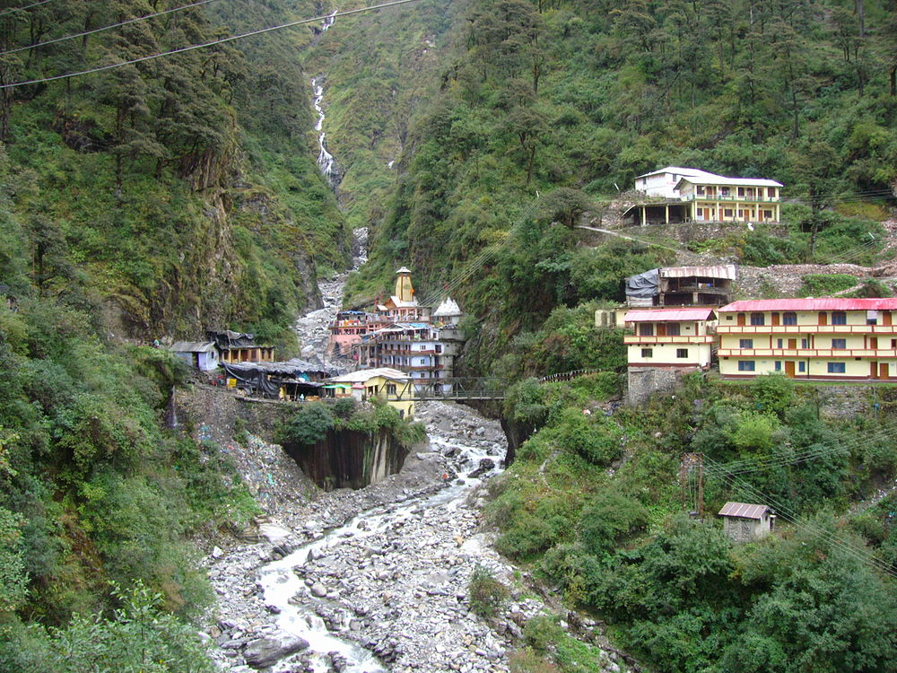
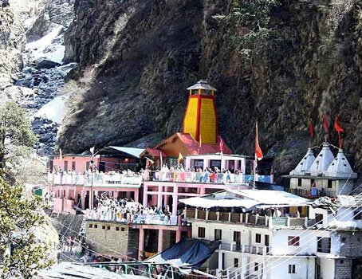
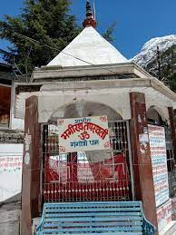

Kedarnath
Kedarnath temple is one of the sacred pilgrimage centre in Northern India, located on the bank of Mandakini river at an altitude of 3584 meters above sea level. The historical name of this region is "Kedar Khand". Kedarnath temple is a part of Char Dhams and Panch Kedar in Uttarakhand and one of the 12 Jyotirlingas of Lord Shiva in India.

Directions
Badrinath
Badrinath Temple or the Badrinarayan Temple dedicated to Lord Vishnu is one of the four Char Dham and Chota Char Dham pilgrimage yatras. Situated at the height of 10,279 feet, The main gate of the shrine painted with myriad colours. Badrinath Temple has a Tapt Kund. The vibrant festivals of Mata Murti Ka Mela and the Badri Kedar Festival give you another reason to visit the temple.
Directions
Yamunotri
About 3,293 metres above the sea level, Yamunotri stands proudly with its enormous mountain peaks, glaciers and gushing waters of Yamuna. On the western side of Garhwal Himalayas, in the Uttarkashi district of Uttarakhand, lies the holy place of Yamunotri. About 3,293 metres above the sea level, Yamunotri stands proudly with its enormous mountain peaks, glaciers and gushing waters of Yamuna. River Yamuna, the second most sacred river of India, originates in Yamunotri, making it one of the pilgrimage sites in the Chota Char Dham Yatra in Uttarakhand.
Directions
Gangotri
Bhagirath Shila is located at about 26 Kms from Harshil, 100 Kms from Uttarkashi, 263 Kms from Rishikesh Railway Station, 266 Kms from Dehradun Airport, 267 Kms from Rishikesh, 285 Kms from Haridwar Railway Station and 503 Kms from New Delhi Airport. Gangotri is situated at the end of NH 108. Pilgrims need to go to Uttarkashi bu GMOU bus or private taxi. From Uttarkashi, four wheelers are available on shared basis to Gangotri. Gangotri is connected with motorable roads, buses and taxis from important destinations like Rishikesh, Dehradun, Uttarkashi and Tehri Garhwal.
Directions